Scattered competitor intelligence
Intel lives across tabs, Slack, and ad libraries with no shared scoring.
Product portfolio case study
AI Innovation Signal Intelligence System
An AI-powered signal intelligence layer that processes competitor, market, customer, campaign, and internal product signals, filters noise, detects patterns, prioritizes opportunities, and converts innovation signals into roadmap inputs, experiments, alerts, and team actions.
ops.db, innovation.db), local signal store, innovation memory search, report delivery log, source registry, AI Updates registry
External ingestion: X/Twitter via Nitter RSS (72+ curated accounts), Reddit JSON API (30+ subreddits), Google News RSS (60+ queries), LinkedIn Pulse via Google News, 20+ industry blog RSS feeds, YouTube channel RSS (+ optional YouTube Data API stats), 33+ MarTech tool news queries, AI platform RSS (Anthropic, OpenAI, Google Gemini, LangChain)
Internal ingestion: Discord #innovations channel sync, innovation account registry scrape, authenticated site scraper (AUTH_SITES), manual operator inputs via dashboard
Integrations & delivery: Google Sheets signal export, Discord webhooks (daily digest + innovation alerts), Telegram bot delivery, competitor watchlist / expansion seeds — action routing to product, growth, creative, media buying, BI, ops, leadership (ClickUp-ready)
Ops: Scheduled scrape pipeline (8h cycle), dashboards, business rules & noise filters, human review workflows, cluster feedback, $1/day AI budget guardrails
A top-to-bottom walkthrough of the Pulsara dashboard covering signal ingestion, noise reduction, prioritization, competitor intelligence, roadmap opportunities, alerts, and leadership summaries.
Recorded from localhost:3000 — all dashboard tabs
Product, marketing, and leadership teams are surrounded by scattered signals from competitors, market trends, customer feedback, campaign data, internal dashboards, sales conversations, AI tool announcements, and operational issues.
The problem is not lack of information. The problem is knowing which signals matter and which should influence roadmap decisions.
Intel lives across tabs, Slack, and ad libraries with no shared scoring.
Performance noise drowns out strategic creative and positioning shifts.
Teams manually synthesize trends instead of converting signals into backlog inputs.
Emerging AI and automation patterns require constant manual monitoring.
Everything feels urgent — nothing is ranked by impact, confidence, or effort.
Market signals rarely become structured experiments or tests.
Product, creative, growth, and ops chase updates in parallel threads.
Past signals, decisions, and outcomes are lost after the weekly review.
Pulsara ingests external and internal signals, filters noise, detects patterns, prioritizes opportunities, and converts important innovation signals into roadmap inputs, experiments, alerts, and team actions.
Real captures from the shipped Pulsara dashboard — signal ingestion through AI briefs, creative intel, innovation scoring, recommendations, and cost guardrails. Each card maps to a product surface in the live system.
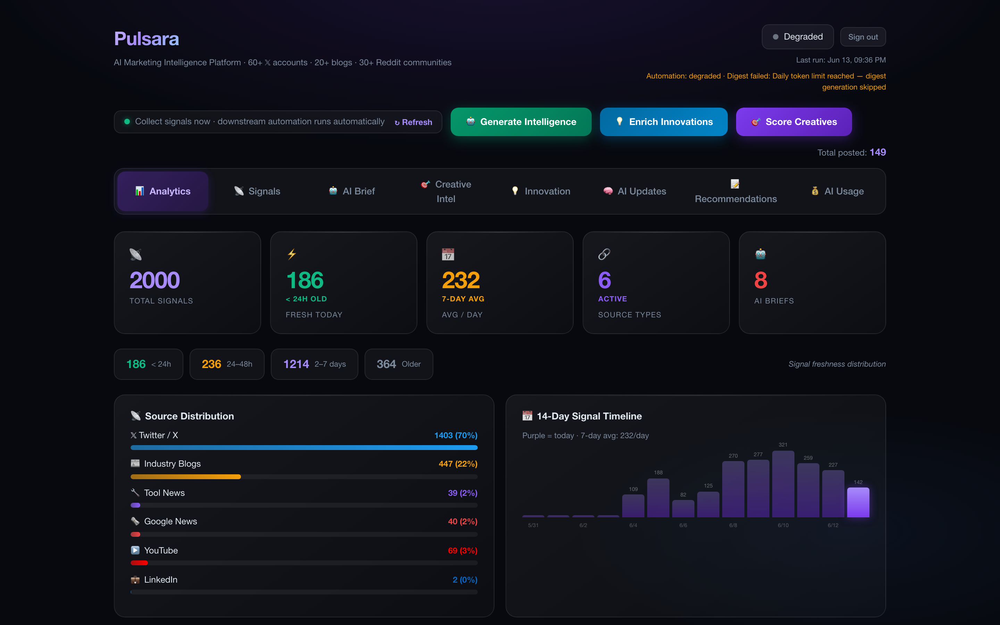
High-level view of signal volume, opportunity themes, competitor moves, urgent alerts, and roadmap impact.
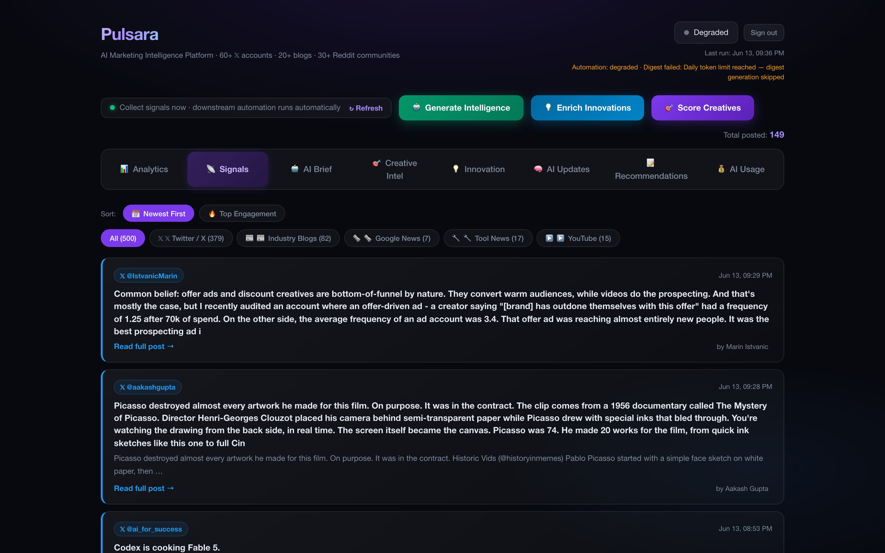
Centralized inbox for competitor, market, customer, campaign, and internal product signals — categorized by source, priority, owner, and status.
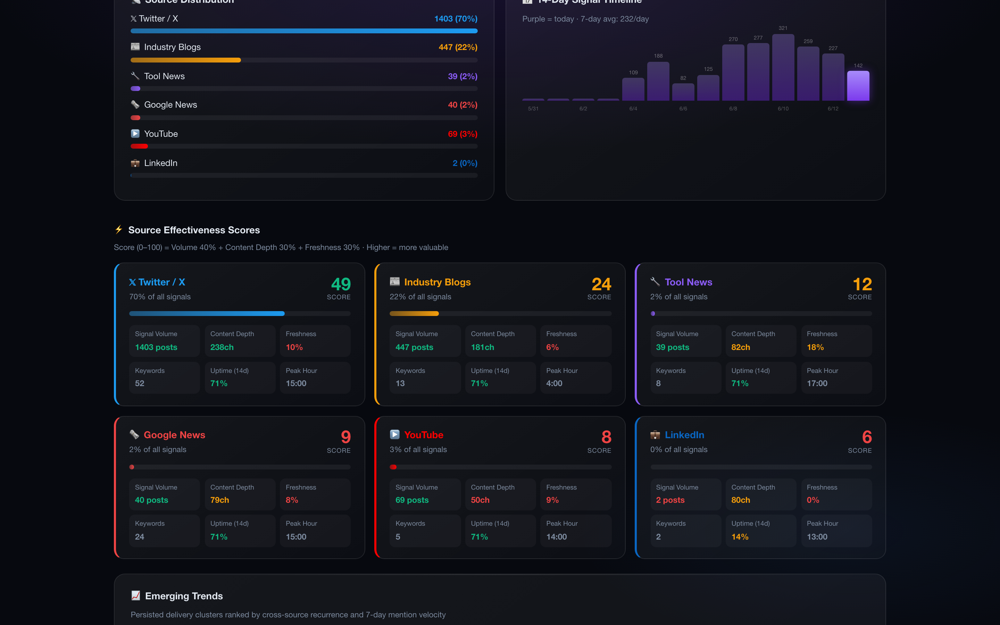
Shows raw signals versus filtered signals, duplicate removal, low-value signal suppression, and final action-worthy signals.
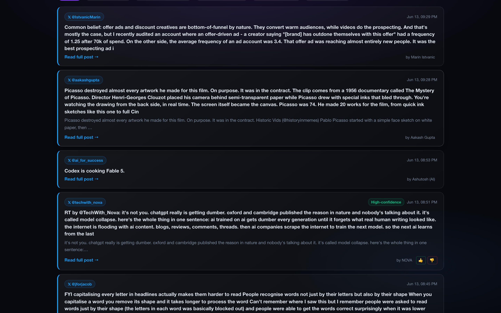
Ranks signals by business impact, urgency, confidence, customer value, competitive relevance, and strategic fit.
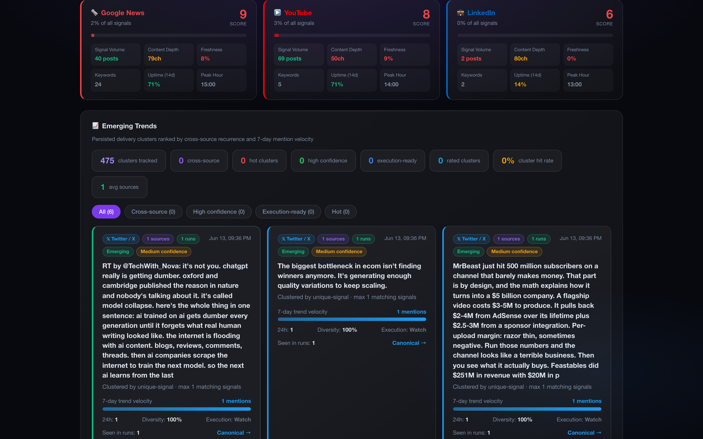
Tracks competitor launches, pricing changes, AI features, positioning shifts, landing page messaging, and ad creative patterns.
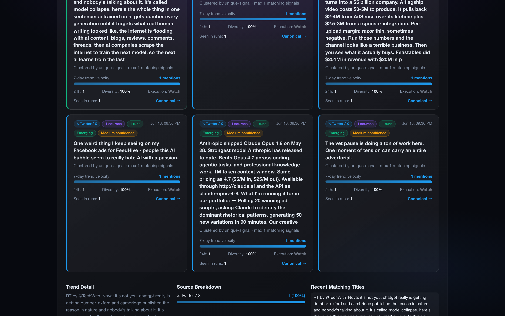
Detects emerging AI use cases, workflow automation patterns, agentic product experiences, tooling trends, and customer behavior shifts.
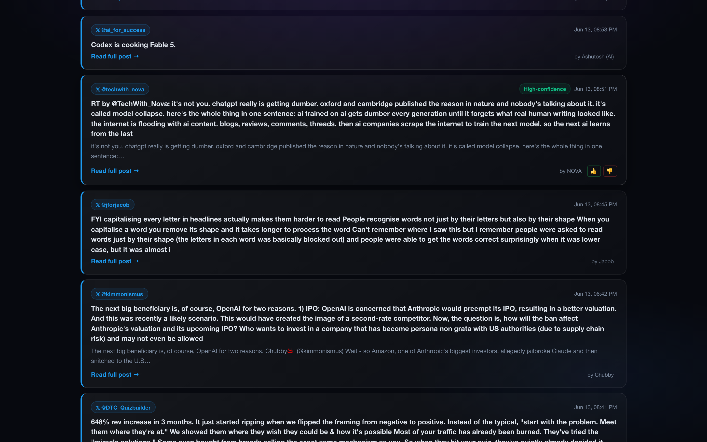
Groups customer pain points, support themes, sales objections, product feedback, conversion issues, and operational bottlenecks.
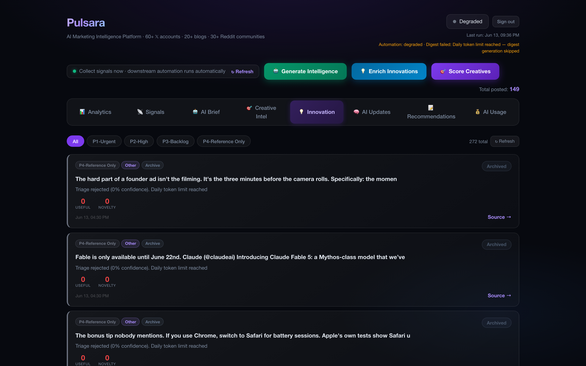
Tracks feature requests, experiment results, dashboard anomalies, roadmap dependencies, delivery risks, and adoption gaps.
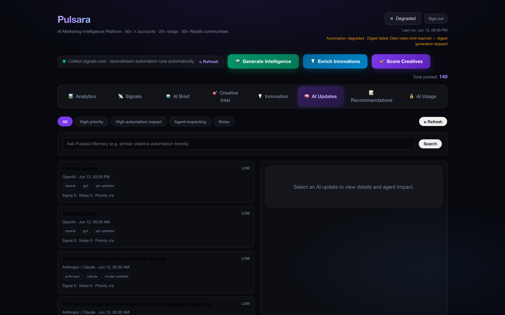
Scores opportunities based on impact, urgency, confidence, effort, competitive relevance, and strategic fit.
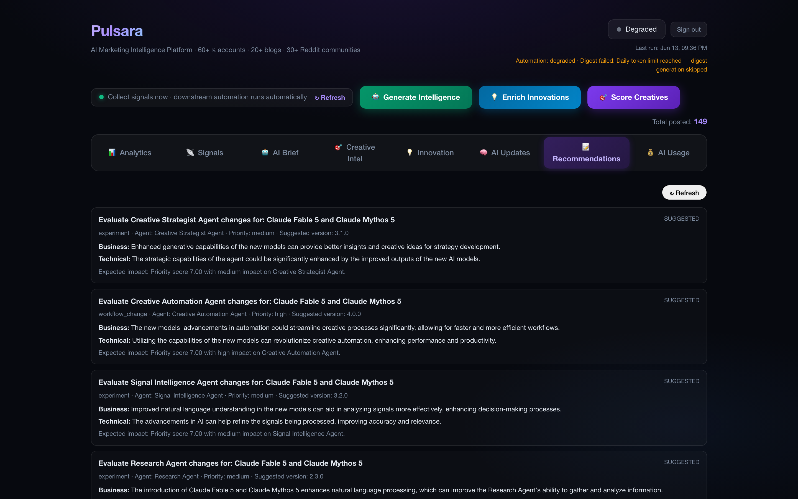
Converts high-priority signals into product opportunities, experiments, backlog items, and leadership review topics.
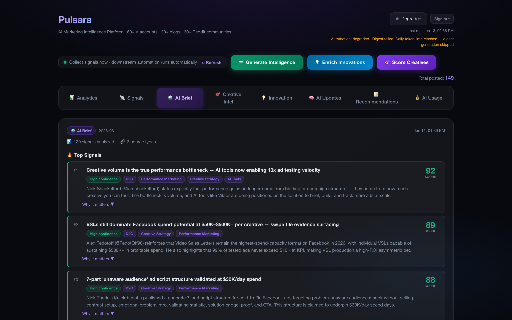
Allows teams to validate, reject, approve, or route AI-prioritized signals before business action.
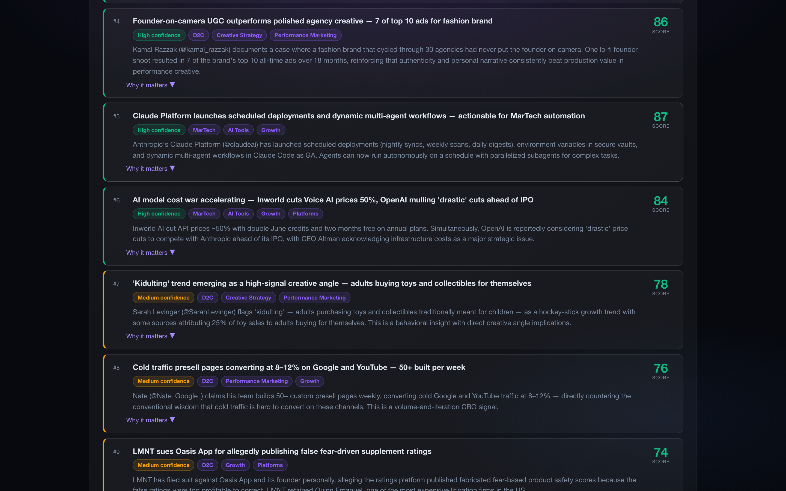
Routes approved signals to product, growth, creative, media buying, BI, operations, engineering, or leadership.

Weekly innovation signal brief summarizing competitor activity, emerging trends, internal opportunities, and recommended actions.
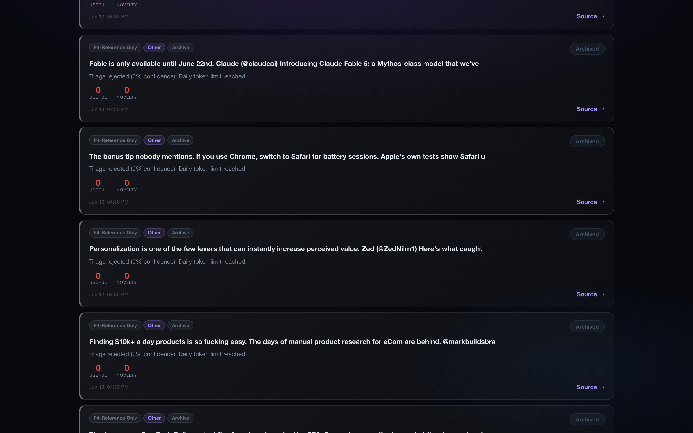
Maintains a history of signals, decisions, actions, outcomes, and learnings.

Shows urgent competitor moves, campaign anomalies, roadmap risks, and opportunity alerts.
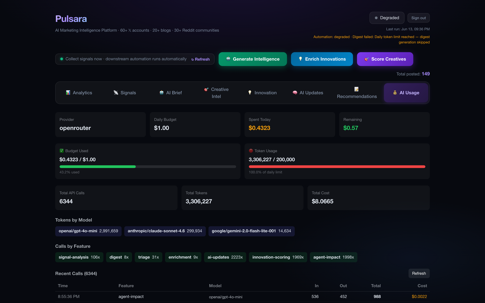
Shows business impact metrics including 2,000+ signals/day, 70% noise reduction, 2–3× throughput, and 40% coordination reduction.
Module-by-module product flows — screenshot proof plus short demo placeholders for Loom embeds.
Brings together competitor, market, customer, campaign, and internal product signals into one structured intelligence layer.
Removes repeated, low-quality, irrelevant, or non-actionable signals so teams are not overwhelmed.
Identifies recurring themes, emerging trends, competitor moves, customer pain points, and product opportunities.
Scores signals based on business impact, urgency, customer value, competitive relevance, effort, confidence, and strategic fit.
Turns high-priority signals into product opportunities, experiments, backlog items, or leadership review topics.
Keeps teams in control by requiring human validation before signals become roadmap or business actions.
Sends approved signals to the right owner across product, growth, creative, media buying, operations, BI, engineering, or leadership.
Generates a weekly innovation signal brief for leadership review.
Creates a record of signals, decisions, outcomes, and learnings so the organization gets smarter over time.
Four intelligence layers ingested, scored, and routed through one signal taxonomy.
Tracks competitor launches, messaging changes, pricing shifts, ad patterns, and AI feature moves.
Converts repeated market, customer, and competitor signals into opportunity themes for roadmap planning.
Identifies emerging AI workflow patterns and suggests where similar automation or agentic capabilities could be useful internally.
Detects creative angles, messaging patterns, and competitor ad patterns that can become testable creative ideas.
Surfaces signals that can become experiments across landing pages, funnels, campaigns, pricing, messaging, or onboarding.
Creates a weekly innovation signal brief summarizing competitor activity, emerging trends, internal opportunities, and recommended actions.
I designed Pulsara as an AI signal intelligence layer that connects external innovation signals with internal product and business decision-making.
My work included:
X/Twitter (Nitter), Reddit, Google News, LinkedIn Pulse, blog RSS, YouTube, MarTech tool news, AI Updates RSS, Discord innovations, innovation registry accounts, authenticated sites, operator dashboard feedback.
Competitor, market, customer, campaign, product, operational, roadmap, and leadership signals.
Deduplication, low-value signal removal, repeated alert suppression, confidence checks, and relevance scoring.
Theme clustering, competitor movement detection, recurring customer pain points, trend identification, and anomaly detection.
Impact, urgency, customer value, confidence, effort, competitive relevance, and strategic fit.
Approve, reject, route, convert to experiment, convert to roadmap input, escalate, or archive.
Product, growth, creative, media buying, BI, operations, engineering, leadership.
Signal inbox, priority queue, competitor intelligence, innovation trends, roadmap board, leadership brief, alerts, and decision memory.
Dedicated walkthrough recordings captured from the live Pulsara dashboard at localhost:3000.
Pulsara shows how AI can connect market awareness, competitor intelligence, product discovery, and internal execution into one decision system.